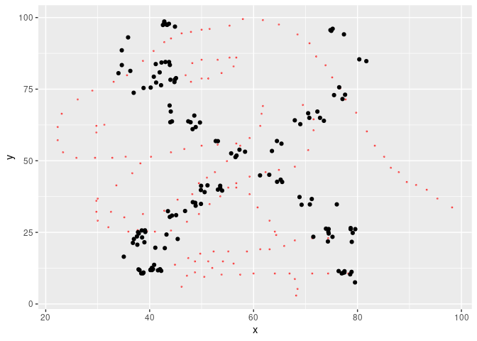

Implements the algorithm proposed by Matejka & Fitzmaurice (2017) to create metamers (datasets with identical statistical properties but very different graphs) with an annealing scheme derived from de Vicente et al. (2003).
In colour theory, metamers are colours that have very different wavelength distribution but are perceived as equal by out visual system. This happens because out eyes essentially summarise a continuous distribution of wavelength by just 3 numbers: the amount that each type of cone cell is exited. Colour metamerism is how artists can reproduce so many colours with a few pigments, or how PC monitors use only 3 lights to show colourful pictures.
(from the excellent Color: From Hexcodes to Eyeballs by Jamie Wong)
Statistical transformations such as mean, standard deviation and correlation behave very similarly in that they summarise data with just a few numbers for the benefit of our limited cognitive capacity. Thus, statistical metamers are sets of data that share some statistical properties.
This article explores statistical metamerism in more detail.
Installation
You can install metamer with:
install.packages("metamer")or install the development version with:
# install.packages("devtools")
devtools::install_github("eliocamp/metamer")Example
You can construct metamers from a starting dataset and a vector of statistical properties to remain constant (by default, up to 2 significant figures).
library(metamer)
# Start with the datasaurus
# install.packages("datasauRus")
dino <- subset(datasauRus::datasaurus_dozen, dataset == "dino")
dino$dataset <- NULL
# And we want to preserve means and correlation
mean_cor <- delayed_with(mean(x), mean(y), cor(x, y))
set.seed(42) # To make results reproducible
metamers <- metamerise(dino, preserve = mean_cor,
stop_if = n_metamers(300),
perturbation = 1,
keep = 19)
print(metamers)
#> List of 20 metamersWe found 20 metamers. Let’s see the final one, with the starting dataset as background.
library(ggplot2)
ggplot(tail(metamers), aes(x, y)) +
geom_point(data = dino, color = "red", alpha = 0.5, size = 0.4) +
geom_point()
We can check that the statistical properties have been preserved up to 2 significant figures:
cbind(dino = signif(mean_cor(dino), 2),
last = signif(mean_cor(tail(metamers)), 2))
#> dino last
#> [1,] 54.000 54.000
#> [2,] 48.000 48.000
#> [3,] -0.064 -0.066However, a semi random cloud of points is not that interesting, so we can specify a minimizing function so that the result is similar to another dataset. metamerise will start from the last metamer of the previous run if the data argument is a list of metamers and append the result.
x_shape <- subset(datasauRus::datasaurus_dozen, dataset == "x_shape")
x_shape$dataset <- NULL
metamers <- metamerise(dino,
preserve = mean_cor,
minimize = mean_dist_to(x_shape),
stop_if = minimize_ratio(0.02),
keep = 99)Now the result is a bit more impressive.
ggplot(tail(metamers), aes(x, y)) +
geom_point(data = dino, color = "red", alpha = 0.5, size = 0.4) +
geom_point()
We can animate the whole thing.
library(gganimate)
ggplot(metamers, aes(x, y)) +
geom_point() +
transition_manual(.metamer)
#> Warning: No renderer available. Please install the gifski, av, or magick package
#> to create animated output
#> NULLYou can freehand your own starting or target data with the draw_data() utility, that will open a shiny interface. You might need to install shiny and miniUI with install.packages(c("shiny", "miniUI")).
Metamerizing operations can be chained while changing the minimizing function.
star <- subset(datasauRus::datasaurus_dozen, dataset == "star")
star$dataset <- NULL
set.seed(42)
metamers <- metamerise(dino,
preserve = mean_cor,
minimize = mean_dist_to(x_shape),
stop_if = minimize_ratio(0.05),
keep = 29) |>
set_minimize(mean_dist_to(star)) |>
metamerise(stop_if = minimize_ratio(0.05),
keep = 30) |>
set_minimize(mean_dist_to(dino)) |>
metamerise(stop_if = minimize_ratio(0.05),
keep = 30) And the full sequence
ggplot(metamers, aes(x, y)) +
geom_point() +
transition_manual(.metamer)
#> Warning: No renderer available. Please install the gifski, av, or magick package
#> to create animated output
#> NULL